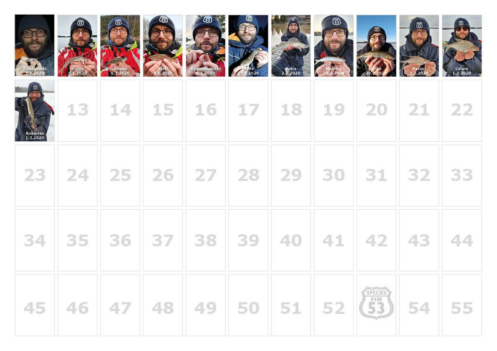
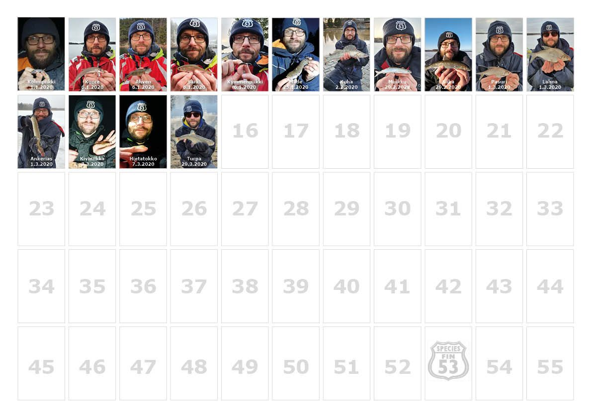
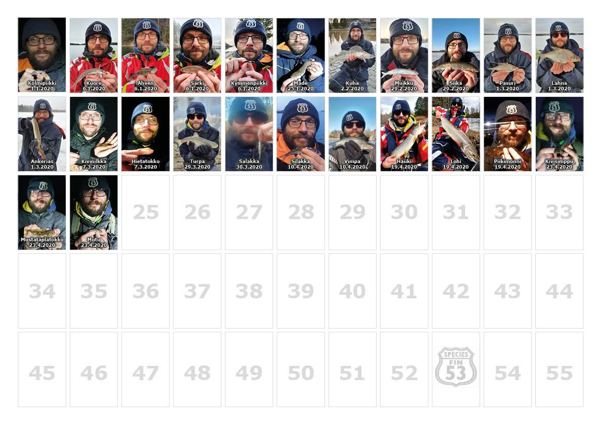
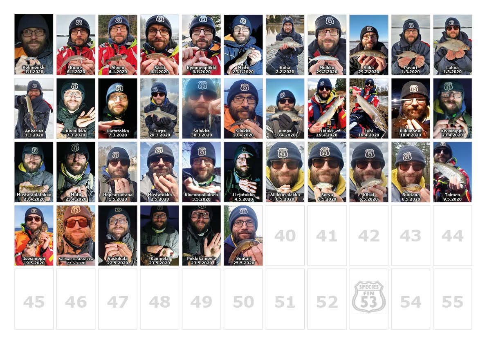
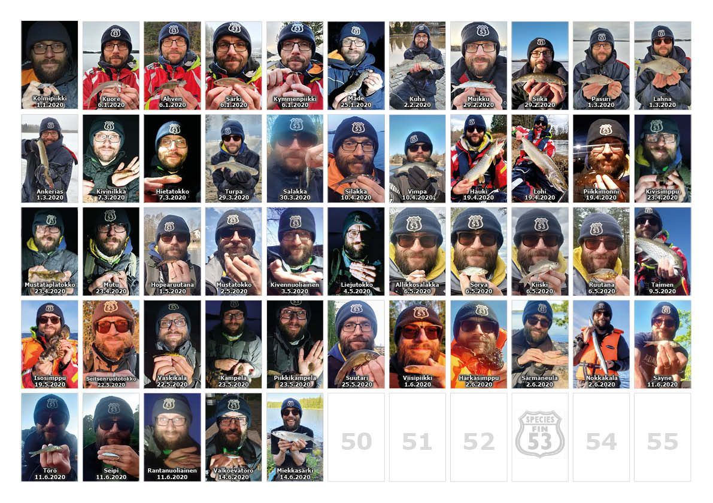
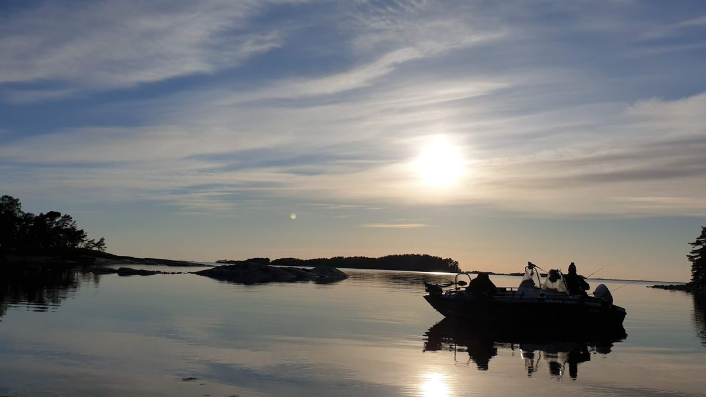
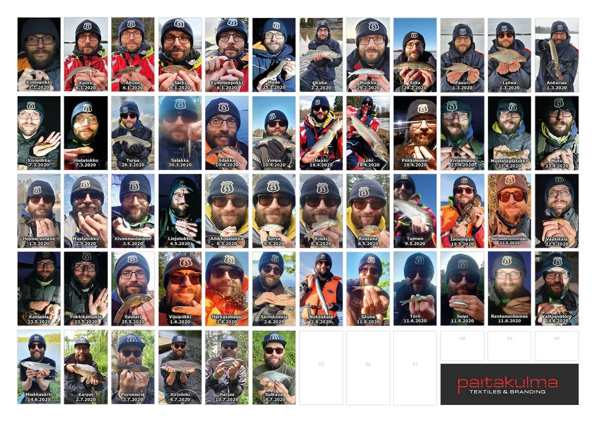
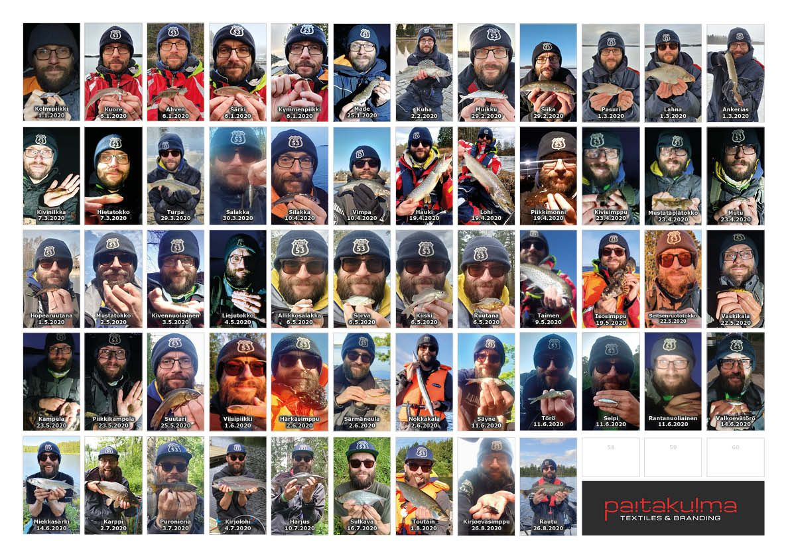

Lajikalastus · Fongaus · 1.1.–31.12.2020
57 kalalajia yhdessä vuodessa
Juha Salosen neljänkympin villitys: yritys rikkoa lajikalastuksen Suomen ennätys. Vuoden lopussa ennätys oli jaettu Juuso Triipposen kanssa – 57 lajia.
- Lajia
- 57
- Edellinen ennätys
- 52
- Elämänpistettä
- 5
- Blogitekstiä
- 37
Lähtölaukaus
Tänään on syntymäpäiväni, vuosia on nyt takana 38 ja 39 vuosi lähtee raksuttamaan. Olen usean vuoden ajan miettinyt maagisen 50 eri kalalajin pyydystämistä ja ajattelin, että vuonna 2020 tämän teen. Tätä pidettiin pitkään ”mahdottomana” tai ainakin haastavana projektina.
Vuosi 2018 oli lajikalastuksen juhlaa. Hyvä ystäväni ja tiimikaverini Timi Laitinen innostui ja teki uuden ennätyksen, joka kirjataan upeaan 52 eri kalalajiin. Kovana kirittäjänä perässä tuli Mikael Jaakkola, joka on tullut Turun Kalamaratonissa tutuksi.
Molemmat onnistuivat erinomaisesti ja fongaus sai ansaitsemaansa huomiota. Tämä Timin ja Mikaelin huima vuosi antoi lisää intoa ennätysyritykseen.
1.1.2020 se alkaa, minun neljänkympin villitys. Siihen ei kuulu moottoripyörää tai jatkuvaa rellestämistä. Siihen tulee kuulumaan upeita kalareissuja, hienojen ihmisten kanssa uutta lajikalastuksen Suomen ennätystä tavoitellen.
Ehkä onnistun, ehkä en, mutta täysillä yritän.
Vantaalla 11.7.2019 – Juha Salonen
Vuosi käyränä
Kuukausi kuukaudelta
Suunnitelma ja jokaisen kuukauden lyhyt päivitys siitä, miten tilanne eteni. Jokaisen kuukauden alla ovat sen blogitekstit kokonaisuudessaan.
Tammikuun yhteenveto
Tammikuusta ei jää paljoa omalta kohdalta jälkipolville kerrottavaa. Kalastustunteja kertyi vajaat 32 ja sillä saatiin lajeja nousemaan kuusi. Kolmipiikki, kuore, ahven, särki, kymmenpiikki ja made pääsivät tammikuun lajilistalleni.
- Lajia per reissu
- 1
- Tehokkuus
- 91,67
- Suomen ennätyksestä
- 11 %

Kuukauden blogitekstit


Kokkolaan ja halki Suomen
Käydessämme Timin ja kalastustoimittaja Jari Tuiskusen kanssa Kokkolassa pilkkimässä elämänpisteet muikusta, tuli idea mieleen: mitä jos ennätysyritysvuonna ajaisi suoraan Kokkolasta Lapinlahdelle ankeriasta kokeilemaan?
Välimatka olisi vain 255 km, eli vajaat 200 km lyhyempi kuin Helsingistä. Mukaan ankeriasjahtiin lupautui lähtemään ankeriasmestari Miika Nyman.
Heittäydyin polvilleni ja nostin käteni kohti lumihiutaleiden täyttämää taivasta. Taakka ankeriaan saamisesta oli tippunut pois olkapäiltä ja kesältä. Vuonna 2014 tämä paikka selvisi, 2018 retkisuunnitelman löin lukkoon ja nyt sen toteutin.
Ankeriaan saaminen talvella vapautti aikaa kesälle yrittää miekkasärkeä ja valkoevätöröä.
- Lajia per reissu
- 1,71
- Tehokkuus
- 92,86
- Suomen ennätyksestä
- 23 %

Kuukauden blogitekstit


Suurten lajien aika… tai sitten ei
Tiedossa oli, että Kymijoen Siikakoskella voisi Kotkan Kalamaratonissa tutuksi tulleen Petri Ristolan opissa tavoitella talvikkolohia ja taimenia. Tämä oli lähtökohta maaliskuulle heti ankerias- ja muikkureissun jälkeen. Justus ja Niko olivat jo alkuvuonna näyttäneet, että lohen saaminen Kymiltä näin keväällä on hyvin todennäköistä.
Alkukuusta myös Miika onnistui nappaamaan lohipisteen vajaassa sadassa tunnissa. Maaliskuussa lajilistalle nousivat ankerias, kivinilkka, hietatokko ja turpa.
- Lajia per reissu
- 1,14
- Tehokkuus
- 92,86
- Suomen ennätyksestä
- 30 %

Kuukauden blogitekstit


Kalamaratontreenit alkavat… tai sitten ei
Huhtikuu alkoi Uudenmaan rajojen ollessa kiinni. Kymijoen souturetki toteutui lopulta 19.4. Miikan ja Juhon seurassa. Lopputulos oli toivottu: 66 % Miikan puheista täyttyi, vain taimenpiste jäi saamatta. Kotimatkalla vielä piikkimonni matkaan ja LPR reissulle nousi kolmeen.
Toukokuu lähenee vääjäämättä ja Kalamaratonit näyttävät peruuntuvan – toutaimen kutu taas ei. Toutainjahtiin on tarkoitus lähteä ensimmäiseksi Kouvolaan vloggari Defen seuraan.
Huhtikuun osalta lajilista täydentyi silakalla, vimmalla, hauella, lohella, piikkimonnilla, mustatäplätokolla ja mudulla. Lajikalastus 2020 -seurannassa fongarit ovat pyydystäneet yhteensä jo 40 lajia.
- Lajia per reissu
- 1,19
- Tehokkuus
- 90,67
- Suomen ennätyksestä
- 47,17 %

Kuukauden blogitekstit


Lajirikkaat Kalamaratonit – tai sitten ei
Vuosittain osallistuminen Helsingin ja Kotkan Kalamaraton-lajikalastuskilpailuihin kerryttää treeniaikana lajilistaa lukuisilla lajeilla. Nyt kilpailuja ei ole ja lajeja piti käydä vartavasten onkimassa. Näitä retkiä tein Stadissa sijaislapsemme kanssa ja listalle nousi nopeasti peruslajistoa.
Täsmäreissujen lisäksi seikkailin Esko Vuoren ja Sakke Yrjölän kanssa Helsingin edustalla taimen- ja simppujahdissa. Taimenpiste nousi Vajokki-vieheiden tekijän Esko Vuoren kanssa, kun lajipisteeksi nro 33 nousi istaritaimen.
Kalamaratonien peruuntumispettymystä purimme Timin kanssa Hangossa. Kyllä oli huikea reissu: lajipisteet seitsenruototokosta, joka oli elämänpiste, ja lisäksi vaskikala, kampela ja piikkikampela. Lajimäärä nousi samalla lähelle 40 lajia.
Voinen sanoa, että oli fongaushistorian kovin toukokuu koko porukalle. Huikeaa lajijahtia kaikilta!
- Lajia per reissu
- 1,15
- Tehokkuus
- 81,3
- Suomen ennätyksestä
- 74 %

Kuukauden blogitekstit


Seuriosta tärppiöihin – upea kesäkuu
Kesäkuu alkoi pikavisiitillä Hangossa, josta Miikalle nousi elämänpisteeksi seitsenruototokko ja minulle kotimatkalla lajipisteeksi viisipiikki.
Särmäneulat antoivat odottaa seuraavaan päivään, jolloin lähdin Mikael Jaakkolan ja Mikon kanssa Kemiönsaaren vesille nokkakalajahtiin. Molemmat pisteet nousivat ja lisäksi sain jigattua härkäsimpun lajipisteeksi. Ensimmäisen viikon aikana jo neljä uutta lajia – tavoiteaikataulu oli kiritty kiinni.
Samalla tuli oma ennätys, eli 47 lajia pyydystettynä kalenterivuoden aikana. Kotkasta nousi listalle säyne, törö, seipi ja rantanuoliainen.
Lajit 48 ja 49 nousivat Saimaan kanavalta Timin ja Miikan seurassa. Siihen loppuikin kesäkuun lajilistan kasvatus, vaikka kalassa kävimme mm. Tampereen Pahalammella.
Siinä oli ensin jotakuinkin, vähän kuin sarjakuvissa: ”RRROOOAARRRRRRR!!!” niin, että rannan männyt taipuilivat ääniaalloista ja pipo tutisi kipparin päässä. Sitten se ponnekas PIIP-sana 😄
– Mikael Jaakkola
- Lajia per reissu
- 1,17
- Tehokkuus
- 80,2
- Suomen ennätyksestä
- 92,45 %

Kuukauden blogitekstit
 Lähe juttuseuraksi käymään Hangossa? - Lajikiihkon kutsu
Lähe juttuseuraksi käymään Hangossa? - Lajikiihkon kutsu
Harvinaista herkkua – kaksi elämänpistettä Kotkan kalavesillä - 100% onnistuminen
Kotkan kalavesillä - 100% onnistuminen Elämänpistejahdissa - vinkit miekkasärjen ja valkoevätörön ongintaan
Elämänpistejahdissa - vinkit miekkasärjen ja valkoevätörön ongintaan Elämyksiä keskellä Tamperetta - Pahalampi onkipaikka vailla vertaa
Elämyksiä keskellä Tamperetta - Pahalampi onkipaikka vailla vertaa Kesäkuu - huikeita onnistumisia
Kesäkuu - huikeita onnistumisiaEpäonnea Lapissa – ja ennätys rikki
Alkuperäisen suunnitelman mukaan vaimoni olisi mennyt Jyväskylässä järjestettäville Knitfesteille ja me lasten kanssa olisimme tulleet perässä. Tämän jälkeen kalastaisin sulkavaa Saarijärven ja Karstulan ympäristöstä.
Tästä suunnitelmasta jäi lajipisteiksi Puuhapuisto Veijarista napatut kirjolohi ja puronieriä. Näillä kahdella lajilla sivusin Timin tekemää SE-tulosta, ja ennätyksen rikkoutuminen siirtyi Lapista pyydettävien kalalajien tehtäväksi.
Lapin lajit näyttivät oikullisuutensa, eikä tilannetta edesauttanut tyttäremme hyttyskammo. Kalastus jäi näin vain yhden päivän ja illan pituiseksi.
Enossa virtaa Kuusoja, joka on lähellä Ilomantsissa sijaitsevaa mummolaa. Päätin ostaa vuorokaudeksi luvan joelle ja lähteä harjusjahtiin. Tässä onnistuinkin monen sattuman kautta – ja Suomen ennätys rikkoutui.
Kotiinpaluun jälkeen oli aika suunnistaa Huittisiin sulkavaongelle. Sulkava tuli pummattua Saarijärvellä ja nyt oli paikkoreissun aika. Särkikaloista uupuu nyt vain toutain. Kiitos Juuso paikkavinkistä.
- Lajia per reissu
- 1,10
- Tehokkuus
- 78,5
- Suomen ennätyksestä
- 101,89 %

Kuukauden blogitekstit


Kärki karussa
Vaikka Lajikalastus 2020 -seurannassa ei ole kyse kilpailusta, on toisten fongareiden kirittäminen saanut lajimäärät nousemaan uusiin Suomen ennätyslukemiin. Miikalla oli elokuulle lähdettäessä lajeja 55 ja minulla 54. Heti ensimmäinen kalareissu toi molemmille uudet lajit: minulle toutaimen Kymijoelta ja Miikalle siperiansammen Myllykosken karppilammelta.
Ei Juusollakaan huonosti mennyt: Lapista nousi kolme lajia ja heti perään Kotkasta vielä rantanuoliainen. Lajimäärä myös hänellä 55.
Itselle elokuu tarjosi huikean Lapinreissun isäni ja Kojamoäijä Juha Oravan kanssa. Tapasimmepa matkalla Tiura-uistinten kehittäjä Arin. Lajipisteiksi nousivat Kylmäluomalta kirjoeväsimppu ja Inarinjärveltä rautu.
Elokuu päättyi Miikan kanssa tasalukemiin 57.
- Lajia per reissu
- 1,10
- Tehokkuus
- 75,9
- Suomen ennätyksestä
- 107,55 %

Kuukauden blogitekstit


Voihan siperiansampi
Syyskuun suunnitelmissa oli Myllykosken karppilammelta siperiansammen pyydystäminen. Tässä onnistuin Timin ja Mikon sekä koiramme Nemon ollessa mukana. Sampipiste nosti minut samalla yksin seurannan kärkeen 58 lajilla.
Eroina listoillamme oli ainoastaan Miikalta (56 lajia) puuttuva harjus ja Juusolta (56 lajia) puuttuvat siperiansampi sekä miekkasärki. Kuten arvata saattoi, sai Juuso sammen ja pääsi tasatilanteeseen Miikan kanssa.
Loppukuun suunnitelmat menivät kuitenkin uusiksi, ja sammet suljettiin pois seurannan listalta… sitten lokakuu edessä.
Kuukauden blogitekstit

Tyhjät slotit listalla
Loppuvuoden suunnitelmissa olivat Jurmo ja Märket, mutta työkiireiden ja perheen menojen takia reissut jäivät toteutumatta. Kruununsa pieleen menneille suunnitelmille toi Uudenmaan paheneva koronatilanne ja oma pitkään jatkunut flunssa.
Koronaa ei testeistä löytynyt, eikä kyllä aikaakaan kuin yhdelle kalareissulle.
- Lajia per reissu
- 0,97
- Tehokkuus
- 76,6
- Suomen ennätyksestä
- 109,43 %
Kuukauden blogitekstit


Mitä seuraavalla kerralla?
Lopuksi kokosin huomiot ja ideat, joita jokainen ennätystä tavoitteleva voi hyödyntää – kuukausi kuukaudelta.
Lue vinkit ennätysyritykseen →Kirjoitettua
- Iltalehti Juuso ja Juha onnistuivat kumpikin kalastamaan vuodessa 57 eri lajia – tunnistaisitko listan eväkkäitä edes nimeltä?
- Iltalehti Pikkusintti on fongaajalle aarre – Juuso, 21, on tehnyt armeijan ohessa häkellyttävän kovan tuloksen lajikalastuksessa
- Erälehti 53 kalalajia vuodessa? Ennätysyritys käyntiin!
Vuoden retkikuvia voit katsella tästä →
Ennätysyrityksessä mukana: Paitakulma, suomalainen perheyritys Helsingin Kampista.